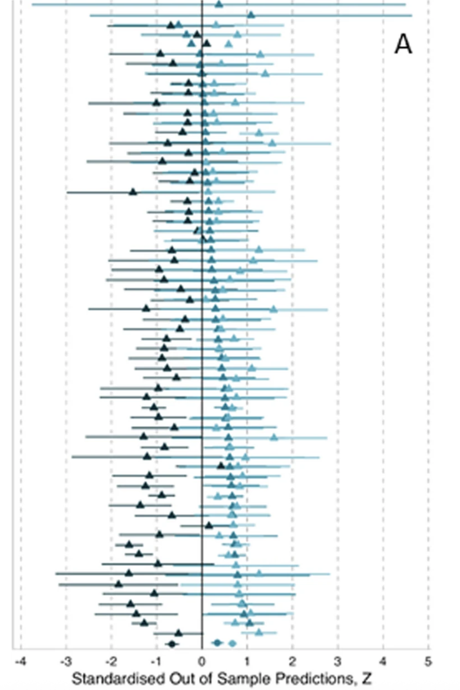

These are some notes and thoughts on the post In-Class Data Analysis Replications: Teaching Students While Testing Science in the Harvard Data Science Review, by Kristina Gligorić, Tiziano Piccardi, Jake M. Hofman, and Robert West, published on July 31, 2024.
I am interested in this article because I want to incorporate more real-world practice in my teaching, and that does not mean just using interesting data from Kaggle. This article demonstrates a way to incorporate real data while also having the students participate in the broader scientific conversation.
I will not be covering everything in the article, I’m just noting down some thoughts and some action items for myself and hoping this will be interesting to someone else.
Overview
The authors taught a Master’s level course on data science methods at EPFL (École Polytechnique Fédérale de Lausanne). In lieu of a standard project in which students are free to choose their own projects, there was a set of papers to choose from. The students were expected to reproduce two figures from the article they chose: one that the instructors deemed “basic”, and one that the instructors deemed “advanced”. During this process, students answered surveys about their expectations and the realities of their experiences. The students also produced a “creative extension” of the results in the article, in which they were free to analyse the data in a new way.
Results
One of the interesting results is that the students didn’t actually know what a data analysis entailed. Keeping in mind that these are Master’s students, it is surprising that the students over-estimated the time commitment of data cleaning and under-estimated the time commitment of the actual analysis stage. In my class, I often warn students how long the cleaning takes - maybe I should slow down on that!
In my opinion, the most important result of the study was that providing a framework in which to do a project with an example that is pertinent to that project allowed the students to better understand the material1. Letting students go free with whatever data they want can lead to rabbit holes that distract from the actual material.
In the case of this article, the framework they used was replication studies. Instead of giving strict instruction on how to do an analysis, the instructors gave them the goal and let the students find the path. This seems like a great way to structure a project (but it’s not the only way - the end goal doesn’t have to come from published research). Splitting it into a basic and advanced taks helps with stucturing the course since the students can get started without needing to get into complicated methods right away.
Another really interesting result is that students used more advanced methods in their “creative extension”. This makes sense: the students are stuck in the muck, so they can go even further. The context is laid out for them, they’ve worked with something that someone else thinks is important, and so their minds are primed to keep going. It’s like following someone else’s well-trodden trail, then encouraging them to blaze a little further; the students know which way to go and have the momentum to keep going.
The authors state that they had two half TA workloads devoted to helping with and grading these projects. For a 300+ person class, this seems like a reasonable workload.
Alternatives
The authors state several times that the replications performed in their class have value for the scientific community, but no evidence is provided for this. I don’t doubt that there can be value here, but knowledge isn’t valuable until it’s shared. The replications performed in the classroom are not being shared outside the classroom as far as I can tell. That being said, highlighting failures in replicating a basic figure due to incomplete descriptions is something I will think about when submitting my next paper!
As I noted above, I love the way that a replication study provides structure for a project. It’s not the only way, but it’s a very elegant way. An alternative way to get this value is to simply let the students reproduce a plot/model made by the instructors (rather than a published article). This gives instructors full control over the context and the level of difficulty, while providing the students a clear goal. The data could also be curated to allow for more creative extensions by including more data or by intentionally only studying a subset of the data in the original analysis.
This article also reminded me of some replication exercise I saw a while ago. After getting to page 3 of Google search results, I finally found what I was looking for (along with three other similar papers):
- This study gave a bunch of groups the same data and hypothesis, then asked them to produce a confidence interval. The resultant estimate of each analysis is shown in the image to the right. This demonstrates just how important the “Researcher Degrees of Freedom” or “Garden of Forking Paths” is when doing an analysis.
- Something similar was done in this study, this study, and this study.

Lessons Learned2
Here are some of the takeaways I had from this paper that I will try to apply in my next course, in no particular order. Many of these are already do to some degree, but it’s good to have a higher degree.
- More surveys! I need to incorporate pre- and post-surveys for more of my assignments and tests to see what my students expect, and where my students are wasting efforts.
- Chunkable projects! The replication had several chunks, all of which can be graded separately. This saves the students from having a major project that goes wrong without them knowing, and helps students keep on track.
- This also allows students to build a tangible portfolio, with each “chunk” being an opportunity to demonstrate mastery and show it. This is something I want to incoporporate, so I’ll keep this sort of project in mind.
- Clear end goals! I might even check out the papers they used, but having a goal to produce a specific thing sounds reasonable. This is also amenable to automatic grading for code assignments.
- Creative extensions! I already have included something like this, but having a word for it helps cement it as an option in my mind.